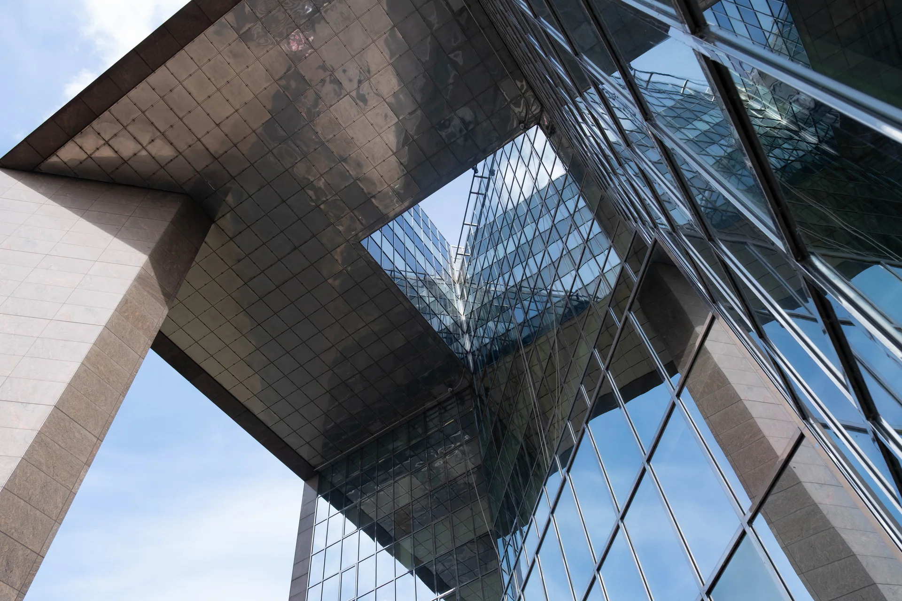

Art / Photography
Things that
held my gaze.
Streets, gardens, geometry and people — a personal collection of moments worth keeping.
Explore the collection- Frames
- 21
- Camera
- Fujifilm
- Collection
- Ongoing

Selected work
The collection
No fixed theme. Just light, colour, shape
and the occasional perfect accident.
Preparing the photographs…
End frame
More photographs will find their way here.
Return to all projects